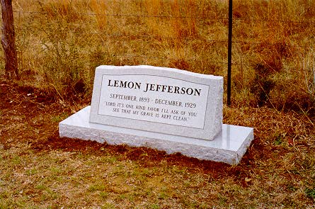

Лимонный - на сто лет блюзбыл и есть один гитарный журнал. там блюзмэнов привечали, хотя, бизнес есть бизнес, и на тот конкретный момент по большей части страницы журнала отдавали феноменальным гитарным группам из сиэтла. нет, это не давно было, это вот, уже в наши времена, 92-й, что ли, год шел. ну, вот. однако ж, понимая важность отдельных моментов, связанных с уменьшением стоимости производства одного номера журнала путем увеличения части тиража, распространяемой по подписке, один шеф-редактор там оооочень блюз любил, статьи хорошие писал, и приглашал приятных людей в редакцию, чтобы поговорить с ними вот об этом своем любимом, потому что никак блюз не переставал его удивлять - и фактом, и обстоятельствами своего существования, и он все хотел выяснить - как же так,. и вот однажды особенно приятный человек ему - B.B.KING, КОРОЛЬ БЛЮЗОВ, - это так его все друзья называют, над фамилией подшучивают, что ли - пришел. они уж, слава те господи, с шеф-редактором тоже не вчера познакомились, обо многом переговорено, но с хорошим человеком не грех снова потрепаться на темы, не раз истрепанные. они, в общем, и мемфис поминали, и бибикинговы короткие штанишки, и на гитару гибсон по имени люсиль со всех сторон смотрели. и тут шеф-редактор у короля блюзов вот что спрашивает: А КАКОЙ У ВАС ЛЮБИМЫЙ БЛЮЗ? будто не знает, что их, любимых, сотни, и все они королю - что дети родные. но нет же! я давно замечал, лучшие ответы получаешь на банальные вопросы. оказался-таки один блюз - из ряда вон, особенный даже в глазах короля. и вот сидит король в хорошем кресле в офисе модного гитарного журнала, на дворе двадцатый век кончается, вокруг компьютеры, на стенах - постеры, халявные компакты под ногами хрустят, а он сидит, и вместо ответа - поет, потому что блюз, это не название, это спеть и почувствовать- и вот сидит король, почетный доктор и член-корреспондент консерваторий, и поет блюз, где в строфе четыре строчки, и первые три - одинаковые и по словам и в мелодии, только поются каждая на тон повыше предыдущей, чтобы было куда упасть в последней-то строчке: There's one kind favour I ask of you О единственном последнем одолжении
прошу тебя а знаете, сколько лет было нынешнему королю блюзов, когда один толстый слепой негр просил об этом одолжении, сидючи со своей гитарой в чикагской звукозаписывающей студии фирмы paramount? два с половиной годика ему было. Гадать только и остается, стоит начать выяснять судьбу Слепого Лимона Джефферсона. Так мало известно о тех, кто пел архаичный блюз, словно кто заботится, чтобы их жизнь была не биография, а народный эпос. И вот СЛЕПОЙ ЛИМОН ДЖЕФФЕРСОН. Положим, когда он родился, был он из тех черномазых ребятишек, на кого документы не полагались. Мало ли их, и кто еще доживет до следующего лета под солнцем Техаса?.. Но все же, дата его рождения окружена вполне достоверными гипотезами. Вот так: "конец XIX века, вероятно 1897 год, возможно, июль, предположительно 11 число." С датой кончины - короче: И что удивительно, умирал-то он не одним из большого выводка. Он все-таки вышел в поштучные люди. Во второй половине 20-х годов именно его пластинки расходились наибольшим тиражом в категории "рассовых" записей. То есть, на современном языке говоря, был он признанным лидером хит-парадов. На тридцать втором году жизни ездил Лимон на "форде" с персональным шофером. Женщина, назвавшаяся его вдовой, сняла потом с его счета полторы тысячи долларов - накопления для техасского негра 20-х годов нешуточные! Родился он в деревне, а умер в большом городе. И все же о рождении его известно больше, чем о смерти. Сейчас есть книжки, которые можно почитать. А в 60-х, когда белые молодые таланты искали у блюзовых старцев заветные рецепты, история блюза передовалась изустно. И по рассказам, вот именно в "форде" смерть-то его настигла. А шофер? "Да шофер с деньгами сбежал, вместо того, чтобы в госпиталь везти." "Нет,- сокрушенно цокал языком, мотая пьяной головой Майк Блумфилд, - замерз он. Точно! Мне Лидбелли рассказывал!!! В Чикаго в ту зиму был жуткий мороз. И он замерз прямо на улице, а в руке его замерзла его гитара. Как он пел: My heart's stop beating, my hands got cold, Мое сердце перестает биться, мои руки
холодеют, - Так и было." "Эх, люди были! - согласно покачивали головами в канун 1965 года фолк-блюзовые энтузиасты, решая назвать свою новую электрическую-психоделическую группу "Джефферсон Эирплэйн". Will you ever hear the church bell toll (бум) Как услышишь, что звонит церковный
колокол (boom) Молодые антивоенные хипповые и бугивужные "Кэннд Хит" в 1968 весь свой арсенал электроинструментов, фузы и дисторшины всякие вложили в акорд после строчки "Как услышишь, что звонит колокол на погосте." Задело их, что холодок бежит по спине, когда Слепой Лимон Джефферсон воспроизводит на этой точке дальний колокол сельской церкви коротким акордом на простенькой акустике. Эх, историография рок-н-ролла... Пожалуй, самая популярная сегодня наука! (Что тем более забавно, чем менее она может принести пользы). Корни рок-н-ролла уходят далеко в прошлое - за годы славы Битлз и даже Элвиса Пресли. Было дело, рок-н-ролльные новации представляли в восточном полушарии - кознями империалистов, а в западном - секретным оружием коммунистов. На самом деле этим открытиям в обед - сто лет. Все началось со странствующих блюзмэнов, веселивших в кабачках Юга США нетребовательную публику; игравших на "грязных" танцульках, устраиваемых в субботу вечером рабочими со строек дорог или плотин и батраками с хлопковых плантаций. Для того, чтобы после пятидневки поднять трудягу в пляс, требовался гитарный риф простой и неотступный. Рок-н-ролльные фигуры рассыпаны тут и там по записям Блайнд Лимона Джефферсона. И один его блюз продолжился в рок-н-ролле, хоть и в упрощенной редакции. Айк Тернер и Карл Перкинс, а за ними те самые "Битлз" - пели строчку Лимона о том, что кончились спички, и любимая больше не любит. "Ну так уложи все свои шмотки в пустой спичечный коробок - и снова в дорогу." (Matchbox). Сходило за шутку, хотя для автора было чистой несмешной правдой. Но в рок-н-ролл и репертуар "фабов" не влезала нешуточная строфа: Oh dig my grave with a silver spade О, выкопай мне могилу хоть лопатой из
серебра, Свои невидимые кандалы от рождения тащит каждый. Некоторые умудряются их не замечать. Но и "Медведь" Хайт, и "Слепой сыч" Уилсон сковырнулись с дистанции раньше срока, потому что слишком хорошо их ощутили на себе. Видать, действительно этот блюз для "Кэннд Хит" был не чужой. Но все же... Невидимые кандалы, в которых он родился, в которых гукал в колыбели... Кандалы, которые заставляли каждодневно защищать свое человеческое достоинство и само право на жизнь... Что это за кандалы, поймет по-настоящему только тот, кто родился черным в прошлом веке на Юге США. Да еще и слепым... Говоришь об этом, и невольно становишься полупролетарским писателем: "Может ли кто-нибудь представить себе судьбу более ужасную, нежели обнаружить, что он - слеп. Каково? - узнать, что вся красота, о которой он слышит, о которой ему рассказывают,- им не может быть увидена. Такова разбивающая сердце судьба, доставшаяся Слепому Лимону Джеферсону: он родился слепым и обнаружил, еще ребенком, что жизнь отняла у него одну из самых больших радостей - зрение. Это-то и сыграло определяющую роль в его судьбе. Он мог слышать - - а слышал он печальных, усталых сердцем людей своей родины, Далласа - как поют они свои странные, печальные мелодии - и занимаясь работой, и отдыхая от нее. И бессознательно он начал их иммитировать - обращая судьбу свою в песню. Он научился играть на гитаре, и многие годы даром развлекал своих друзей - он стонал эти странные песни, это был его способ забыть о своем недостатке. Кто-то из его друзей, кто увидел в нем великие способности, предложил ему заработать на жизнь этим талантом - и в результате, последовав тому совету, - его теперь можно услышать исключительно на Парамаунте". И уже думаешь, что эксклюзивный контракт с Парамаунтом - счастливое вознаграждение за слепоту, полученное, как выплата компенсации все от той же мудрой сердечной судьбы. Вышезакавыченный текст - из буклета "Книга блюзов фирмы "Парамаунт", рекламная листовочка, призванная убедить хозяев музыкальных магазинчиков заказывать пластинки и продавать их "печальным, усталых сердцем людям". Написано, наверное, клерком, начитавшимся плохих переводов Горького, вполне пролетарского писателя. В глаза не видел клерк Джефферсона, ничего не знал о том, как живут работяги в Далласе. Сочинил, угадав, что мог по прозвищу и месту жительства артиста. А даром развлекая друзей стонами под гитару - не прожить слепому негру на техасской ферме на заре ХХ века. Вот что более-менее достоверно установлено: Лимон Джефферсон был одним из (по-крайней мере) 7 детей фермера Алека Джефферсона. Лимон - то ли имя, а то ли прозвище, которое он получил от домашних, когда стало ясно, что напоминает его фигура. (Тогда ведь еще и Роберт Джонсон не родился, не спел свою любимую "ЛедЗепом" строчку "Ты сжимай мои лимоны, пока сок не побежит вниз по ногам", и в слове «лимон» пока никто не видел ничего скабрезного.) Был ли фермер с фамилией в честь президента-освободителя, его настоящим отцом? На первых пластинках Лимона имя исполнителя значится как Дикон Эл-Джи Бейтс (Лимон Джефферсон присутствует только инициалами). Железная дорога, по которой возили нефть, проходила рядом с фермой. Насыпь и земля вокруг были черными от нефти и мазута. Один из братьев Лимона погиб под товарняком. Соседи вспоминают, что слепой бегал со всеми другими мальчишками. Когда они перебегали речужку, он останавливался, прислушивался, потом уверенно переходил ее по камешкам и бревнышкам. Соседи считали, что у него - особый дар видеть внутренним зрением. Лимону едва исполнилось 10, когда он стал обретать тот вид, который демонстрирует единственная его фотография конца 20-х: он носил очки, был необычайно толстым (с чего вдруг?). Но пальцы не пухлые, а тонкие и сильные - пальцы настоящего гитарсита. На той фотографии у Лимона Джефферсона необычайно спокойное, уверенное, отстраненное лицо. Как маска, изображающей равнодушие и неуязвимость, а за ней идет его настоящая подлинная жизнь - увлекательно-интересная, необычная, богатая, глубокая - совершенно непохожая на эту... Лет с 12ти он отправлялся в соседний Даллас вдвоем с гитарой. Усаживался на площади перед банком и пел там песенки, подлавливая клерков в перерыв на ланч. К гитарному грифу жесткой проволокой он крепил большую чашку, такую большую, чтобы подателю не промахнуться, кидая монетку. Сам ужинать возвращался на родительскую ферму. Родители только дивились: тот, кто очевидно должен был стать обузой, или нищим странником - первым начал приносить деньги в дом. По рабочим дням он играл, пока был мальчишкой. Юношей он стал приходить в город в пятницу вечером и оставался до воскресного утра. И этот улов нельзя было сравнить с подачками от клерков. Но и жизнь это была совсем другая. Пел Лимон - не в филармониях. Бутлегеры и проститутки платили щедрее клерков. В 18 лет Лимон окончательно переселился в Даллас. Он немного играл на фортепиано, а это открывало перед ним двери любого увесилительного заведения: кабаков и публичных домов. Впрочем, разница между теми и другими была только по рабочим дням, по выходным и там и там - одинаковая программа. Двоюродный брат, которого Джефферсон иногда брал с собой, рассказывал ученым бледным фольклористам: "Не то, чтобы там танцевали - так, топтались. Он начинал петь часов в восемь и продолжать без перерывов до четырех утра. Редко с ним играл еще кто-то - обычно он один играл и пел ночь напролет. А под утро у него находились силы и еще кое- на что." Воспоминали о Джефферсоне: он любил жить просто и требовал от жизни простых удовольстий. У него была поговорка - "не держи меня за дешевку" - и это кредо он всегда был готов отстоять - тут уж не заботясь о комфорте и спокойствии. Рассказывали истории о том, что он наспор зарабатывал и армрестлингом. А еще - в Далласе было достаточно заведений, демонстрировавших "Шоу уродов". В дальних комнатах для доверенных клиентов проводились особые боксерские поединки. Боксеры были слепыми. Бой шел до нок-аута. Был ли Лимон - слепым боксером? Двоюродный его брат вполне это допускает. (И боксировали же зрячие Чэмпион Джэк Дюпри, пианист, между прочим, и Уилли Диксон, контрабасист.) Слепой Лимон Джефферсон чувствовал себя в кабаках и борделях как рыба в воде. Но - стоп - это не значит, что сам он был опустившейся личностью. Он жил только той жизнью, что ему выпало. Но научился сохранять чувство собственного достоинства в окружавших его обстоятельствах - сам. Был бедным - держался прямо. Пошли деньжата - оделся как человеку подобает. И все круглел боками. Но играл так, что бабы на нем все равно так и висли.
Виктория Спивей, великая певица эпохи "классического" блюза была от него в полном восторге: "Среднего роста, с коричневой кожей, он был всегда изящно одет и держался прямо, говорил открыто. Когда я с ним познакомилась - не было на нем очков. Хотя считалось, что он слепой, мне всегда казалось, что хоть немного, но он видит. А если даже и нет - то все равно, черт побери, он чувствовал куда идти и что вокруг - старый волк! Он никогда не позволял этому своему несчатью со зрением мешать ему жить. Он всегда доказывал - я такой же мужчина, как любой другой. Одно из его обычных выражений - "Don't play me cheap". И в большинстве люди любили его и уважали." Это вспомнила Виктория Спивей 35 лет спустя, и чувствуется, что она продолжала оставаться под обаянием этого человека. Его она сказала, что рядом с ним был юноша, весьма предупредительный, который действовал как его проводник. Том Шоу: "И я никогда не слышал, чтобы он кого-то из музыкантов ругал. Что делало его таким популярным - то, что он ни на кого не был похож. Слепой? Он мог делать все, что можешь ты. Он мог идти куда угодно сам по себе, без поводырей. Он различал бумажные купюры и монеты на ощупь." Двое знаменитых позже блюзмэнов утверждали, что в юности побывали поводырями у Блайнд Лимона Джефферсона. Но, помните, все факты из его жизни - под сомнением. Многие из близко знавших Лимона, утверждали, что он никогда не пользовался услугами поводырей, предпочитая ни от кого не зависеть, только от себя. Тем не менее...
Лидбелли говорил, что они выступали вместе. У Лидбелли даже есть блюз "В сторону серебряного города", в котором он поет "Уж мы со Слепым Лимном кутнем как следует." Лидбелли говорил, что именно Джефферсону он обязан некоторыми своими исполнительскими приемами.
Ти-Боун Уокер рассказывал в 1947: "Было дело, я водил Слепого Лимона Джефферсона, подыгрывал ему и ходил с кружкой по кругу, водил его от одной пивнушки к другой. Мне нравилось слушать, как он играет. Он так пел - всем до этого далеко было! Он был другом моего отца. На улице люди собирались вокруг него так плотно, что самого его и не видно было." Гитарист Мэнс Липскомб был немного старше Джефферсона. Он вспоминал, что встречал его в 1917: "Это был тучный крепкий здоровяк с громким голосом. Он играл танцевальные песни и никогда не пел церковных песен. Никогда я не слышал такого, чтобы он спел церковную песню. Он блюзовый человек. У него была жестяная кружка приторочена к грифу его гитары. И когда потянешься положить ему что-то, ну так он тебя поблагодарит. Но он никогда не принимал медяки. Бросить ему туда медяк - он бы узнавал это по звуку. Он тотчас бы достал медяк и выбрасил его." Музыка? Сэмми Прайс, пианист: "Он называл это "буги-руги". Играл этот самый буги-вужный ритм еще аж, ох, в 17м или 18м, я его тогда в Вако услышал. Немного позже, в Далласе, он обычно целый день ходил с одного конца города на другой, играл и пел на улицах и в разных тавернах за чаевые." (А функциональную специфичность ритма "буги-руги" Лимон Джефферсон вполне пояснил в "Booger Rooger Blues", хвастаясь, что у него по всему Техасу в каждом городе и селе есть зазноба.") Народная лирика благоухала в его песнях сюрриалистическим видением обыденности: "Blues jumped a rabbit and rode it for a solid mile Блюз вспугнул кролика и гнал его добрую милю." Он бы анархичным блюзмэном. То есть, господство формы вообще не признавал. Растягивал строчки не считаясь с числом тактов - старая акынская привычка. Гитара с голосом была на абсолютно равных правах. Лишь в немногих песнях она скромно акомпонирует гармонию и ритм, дожидаясь соло. И иногда наоборот, ровные вокальные строчки образуют легкий формальный штакетничек, за которым безнаказанно не считаясь с мелодией и ритмом резвится гитара шальными пассажами. Но обычно, лишь обозначив ритмический отсчет в начале, гитара сразу пускается в головокружительные по тем временам пассажи, не дожидаясь окончания вокальной строчки. Часто поверхностный слух считает блюзы Джефферсона и вовсе аритмичными. На самом деле, ритм у него присутствует всегда. В строгой форме четыре акцентированных четверти выходят на первый план лишь в одном - похоронном - блюзе, вдруг становится слышен этот ровный глухой нутряной ритм сердца блюза и блюзмэна. В других записях он лишь подразумевается. Джефферсон полагал, что ритм - у него и у его слушателя уже в крови - от стука сердца. Разнообразить, закрутить ритмические веньетки или водовороты - вот в чем искусство.
BB KING: "Я до сих пор не могу понять тайну блюзов Джефферсона. Если бы я смог объяснить их притягательность - клянусь, я начал бы играть так же. Что-то особенное в его фразировке - забавное. Двойной ритм. Он мог играть: раз-два-три-четыре, и потом сразу (в два раза быстрее) раз-два-три-четыре, раз-два-три-четыре. И размер оставался тем же - но - в два раза быстрее! И он делал это с такой непринужденной легкостью! Его пластинки я переписал на кассету и всюду вожу собой. Его прикосновение к струнам - уникальное, совершенно другое, чем у остальных гитаристов, и остается таким по сей день. Как я ни старался, как ни пробовал, все пытался - и все же у меня не получалось такое же звучание, как у него. Он был волшебником! А играл всего лишь на простенькой маленькой шестиструнной гитаре с маленькой круглой дырой. Невозможно и представить, с каким удовольствием я бы послушал его. И по-моему, то, как он использовал ритмические фигуры, намного обгоняет его время." Пел Джефферсон не в филармониях, но полные две октавы в вокальном диапазоне он демонстрировал. Манера его пения, и фактура мелодии выдавала близкую кровную связь с протоблюзами: хаулерами - пением в поле, когда короткую выразительную строчку нужно было выкрикнуть так, чтобы слышно было далеко, чтобы подхватили трудяги по всему полю. В 1923 году Джефферсон женился на женщине по имени Роберта. Когда ученые блюзологи много десятилетий спустя стали опрашивать соседей, все, что они могли сказать о жене местного гаргантюа - что была она женщина маленькая и тихая как мышка. Сэм Прайс вот что вспомнил: "Он сам был бутлеггер. И когда он домой возвращался - уши-то у него были чувствительные, а чтобы жена пила, этого он не хотел... Ну, а когда он уходил из дому, она два-три глоточка-то из бутылки делала, думала, он не заметит. Но он брал бутылку в руку, когда возвращался домой, и говорил:"Эй, как дела, бейби? Как у нас сегодня?" (Она отвечала:) "Никто виски так и не купил." Ну, так он брал бутылку и встряхивал ее, и он мог по слуху определить, что двух-трех глоточков не хватает. И что он тогда делал? Он ее за это черт знает как колотил." В конце 1925 по приглашению "Парамаунт" Блайнд Лимон Джефферсон съездил в Чикаго для записи пластинки, став одним из трех первых кантри-блюзмэнов, попавших в студию звукозаписи. Кстати, первыми Джефферсон записал именно две религиозные песни. (Которые, в зависимости от вашего взгляда на жизнь, можно считать очаровательно примитивистскими, или искушенно хамоватыми: He rose, He rose, He rose from the dead Восстал, восстал, из мертвых он восстал. Контракт с Парамаунтом предусматривал одну пластинку в месяц (две песни), и Джефферсон переехал в Чикаго. Для "Парамаунт" он оказался наиболее успешным в своем жанре артистом, и, по отношению к своим доходам, платила фирма ему гроши, тем не менее, по сравнению с предыдущей жизнью эта была просто сказочной. Меньше чем за три года он сменил две машины. (О первом "додже" он по блюзовой привычке сочинил блюз.) Вторую - "форд" за 725$ - то ли он сам купил, то ли подарила ему фирма. Майо Уилльямс, продюссор фирмы, утверждающий, что это он подарил "форд", заявил, что больше ему о Джефферсоне и вспомнить нечего, только что: "Это был самый выдержанный, спокойный и собраный артист из всех, каких мне только довелось встретить." Но в одном из первых блюзовых трудов Сэма Чартерса "Деревенский блюз" (1959) об их взаимоотношениях говорится совсем иными словами: "Отношения Лимона с Майо Уилльямсом и "Парамаунт" были далеки от теплых. Ему платили очень мало, и, похоже, авторские проценты ему начислялись шуточные по сравнению с тем, что он действительно должен был получить. Он оставался на "Парамаунт" только потому, что Уилльямс сводничал для него. Лимон к этому времени стал грязным опустившимся человеком, его мало что интересовало, кроме женщин и выпивки. После записи Уилльямс давал ему немного долларов, бутылку и проститутку." Вот только не но не надо "Ага!" кричать. До истинной правды нам никак не докопаться через семь десятилетий. Может, правда где-то по серединке лежит, и кто-то врет, а кто-то преувеличивает ради художественного эффекта: вот он пьяный жирный гений с потаскухой на коленях - довели человека! Это еще не все свидетельства о последних годах Слепого Лимона. Преп.Рубин Лейси, странствующий проповедник, певец и гитарист, познакомился с Джефферсоном в 1928, как раз на записи для "Парамаунт". Манеры Джефферсона не показались Лейси такими уж отталкивающими, во всяком случае, он пригласил Джефферсона к себе домой, в Итта-Бена (Миссиссиппи). И если потом жалел об этом, то только по ночам. Не-не, не это... Вот почему: "... и мы выступали вместе и в театре в Гринвуде, и в театре в Мурхеде. Он пробыл у нас неделю или две, мы играли то тут, то там, пока ему не пришлось возвращаться снова записывать пластинку, потому что ему это нужно было делать раз в месяц. И сразу после этого он умер. Я думаю, сразу, в одну ночь. Люди говорят, это потому, что он был слишком толстым. Я только одно знаю, если ты ложишься с ним спать в одном доме, ты услышишь, как он храпит, как бы далеко не была его комната. Он был особенным. Ни ради кого не играл на гитаре по восресеньям - не важно, что бы ему не предлагали. Я видел одного, который предлагал ему двадцатку за то, чтобы он сыграл ему одну песню ранним утром. Два человека подошли однажды и сказали: "Мы дадим тебе по десять долларов, если ты сыграешь "Блюз промчался по Техасу, брыкаясь как осел." Только головой покачал. Он сказал:" Я не мог бы играть, даже если бы вы дали мне 200$. Мне нужны деньги, но я не могу играть. Моя мама всегда учила меня, что по воскресеньям ни для кого нельзя играть. Сегодня воскресенье!" Тут я заговорил и сказал: "Дайте я сыграю. Я могу играть хоть по восресеньям, хоть в понедельник." Кстати, именно в 1928 один из блюзов Блайнд Лимона Джефферсона вышел на пластинке в конверте с портретом. Надпись: "Сердечно ваш. Слепой Лимон Джефферсон"- внизу была сделана безупречным калиграфическим почерком. Есть еще свидетельство о нем. Том Шоу был его последним учеником, подражателем и продолжателем его дела. Если то, что вспоминает он - правда, вряди ли можно будет сказать о последних днях Джефферсона, что его мало что интересовало: "Он учил меня: "Прежде всего найди этот звук у себя в голове. Пусть этот звук будет с тобой и днем, и ночью. Тогда ты только научишься делать что-то. Пока этого звука нет у тебя в голове, блин, ничего ты не сделаешь." "Лимон был чисто блюзовым человеком. И он был такого рода блюзмэном, каких вы не каждый день встретите на улице. Он был король. Где бы он не вынимал свою гитару - там он был король. Не было и смысла, чтобы кто-то заговорил, что может его переиграть, никто и делать такого не мог, что делал он - все, что другие могли, это смотреть и удивляться, как он, черт возьми, делает это. Под эту музыку было трудно танцевать. Это была музыка чтобы слушать..." Слепой Лимон Джейфферсон играл на сельских улицах, и городских площадях, в пивных, борделях и на пикниках, в трудовых лагерях на строительстве дорог, плотин и на лесосеках, в тюремных лагерях, в игорных домах, там, где собирались люди с деньгами, и там, где - без. "Истинный блюзмэн, он был не представителем жанра, но минестрелем, и настоящим результатом его творчества был он сам". На шестилетнего Алберта Кинга какое-то из уличных выступлений Блайнд Лимона Джефферсона произвело такое впечатление, что он вспоминал о нем и полвека спустя. Хаулин Вулф подростком встретил Джефферсона, и с тех пор стеснялся играть на гитаре. Знатоки пишут, что это именно джефферсоновскую манеру гитарного соло Ти-Боун Уокер перенес на электро-гитару. Знатокам виднее. В "Кто есть кто в блюзе" Шелдона Хэрриса - в соответствии со стандартом этого справочника - есть две постоянные графы в каждой статье: под чьим влиянием был и на кого влияние оказал данный музыкант. В статье о Джефферсоне в первой графе значится только одно имя: Хоббат Смит (знаете такого? Я - нет). Вторая, на кого он оказал влияние, занимает почти целую страницу, и в ней перечислены все имена великих блюза и даже джаза - от Луи Армстронга до Ти-Боун Уокера и Биг Джо Уилльямса - по алфавиту. Его песенные и гитарные строчки разлетелись по другим блюзам. Видимо, столь богата была фактура его песен, что из нее можно было накроить еще несколько. Роберт Палмер: "Пение Джефферсона с его скачущей фразировкой и с постоянным присутствием очевидного намека на мелонхолию одиночества...- оказало настолько длительное воздействие на блюзмэнов Техаса, что они копировали его пластинки на протяжении многих десятилетий. Удивительное количество стихов Джефферона и целые цитаты из его гитарных записей находишь в записях местных блюзмэнов даже в 50-х годах." Блюзы Джефферсона исполняются и поныне, но довольно редко. Чаще именно их элементы, характерные строчки или гитарные новации времен начала века, всплывают тут и там. Не распался только один его блюз: There's two white horses in a lane Две белых лошади в упряжке, Да, а как же "чистая могила"? Умер он в Чикаго, но тело его было перевезено в родной штат и похоронено на Уорсэмпском негритянском кладбище. В 1967 Историческое общество штата Техас решило поставить памятник на месте его последнего успокоения. Сделано. Но теперь Стив Джеймс говорит - поставили его совершенно не там: "Все знают, что Джефферсон был похоронен у самых ворот. А памятник стоит в глубине." А Юл Дэвис говорит, что раньше-то и ворота на кладбище были с противоположной стороны: «А вот как 14е шоссе передвинули, вот и сделали ворота новые. А памятник стоит правильно, там где надо». Ай-яй – опять ничего неясно!... А ведь дело-то уже в наши времена. Вот и судьба, если суждено было ничего про него не знать наверняка, так оно до самого конца и вышло. Хоть по фотографии можно знать, каким толстым он был, а то некоторые еще рассказывали, что «он на гитаре мог играть только уложив ее на пузо, а живот у него был таким крутым, что гитара упиралась ему в подбородок». Может, и чисто у него на могиле, а может, это и не его могила. Может, он лежит под камнем с надписью "Блайнд Лимон Джефферсон" справа от входа на кладбище, а может и с противоположной стороны и далеко от камня. Может он бил жену, а может и нет, может, был бутлегером и боксером. Может, был он опустившимся пропоицей, подрабатывавшим в Чикаго дворником, а может был он приятным, чисто одетым господином на собственном "форде" с шофером. Может, был он слепым от рождения, а может что-то видел. В конце концов, может минуло ровно 100 лет со дня его рождения, а может и нет... За всеми событиями, которые стали с течением лет призрачными, стоит один факт несомненный. Блайнд Лимон Джефферсон спел тот блюз. Прочистите уши - он спел его так, что слышно до сих пор: "It's a long long way, it's got no end "Это долгий-долгий путь, конца ему нет Большая часть приведенных интервью и фактов взяты из статьи Jas Obrehct в журнале "Guitar Player" July 1991. Интервью Сэмми Прайса и высказывание Роберта Палмера цитируется по книге R.Palmer "Deep Blues" (Penguin Books, 1981) Cэм Чартерс цитируется по книге S.Charters "The Country Blues" (Rinehart & Co, New York 1959) Интервью Тома Шоу и Мойо Уилльямсона и фраза "Истинный блюзмэн, он был не представителем жанра, но минестрелем, и настоящим результатом его творчества был он сам." цитируются по статье Stephan Calt, опубликованной в буклете к сборнику записей Blind Lemon Jefferson "King Of Country Blues" фирмы Yazoo 1990. Другие использованные книги и звукозаписи: S.HARRIS "BLUES WHO'S WHO" (Da Capo, NY 1979) W.DIXON "I'M THE BLUES" (Quartet Books, London 1989) L.COHN “NOTHING ‘BUT THE BLUES” (Abbeville Press, NY 1993) BB KING “BLUES ALL AROUND ME” (Sceptre, London 1997)  |